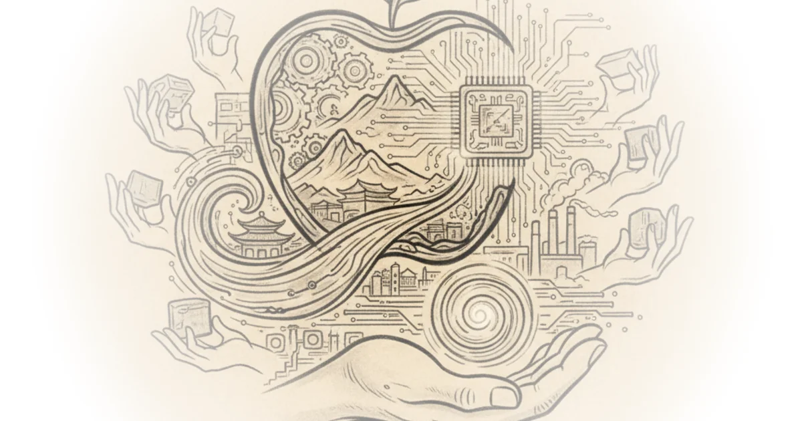

Most observers treat the smartphone revolution as a story of software and design, but Asianometry reframes it as a tale of manufacturing symbiosis that reshaped global industrial strategy. This piece reveals how a single customer's demand for absolute neutrality forced a foundry to rewrite the rules of semiconductor development, creating a dependency that now underpins the entire mobile economy.
The Architecture of Trust
Asianometry begins by dismantling the assumption that Apple's supply chain is merely a logistics network. Instead, they argue it is a strategic fortress built on a specific corporate principle. "TSMC is the sole supplier of one of the most important aspects of the apple strategy its device semiconductors," the author notes, highlighting the unique position of the Taiwanese firm compared to assembly partners like Foxconn. The narrative pivots on a critical turning point: Apple's realization that its primary competitor, Samsung, could not be trusted with its most sensitive intellectual property.

The author explains that the relationship soured because "apple hated knowing that profits coming to the korean giant via its components business would be used to compete with it in mobile phones." This is a crucial insight into corporate strategy; it wasn't just about quality, but about the existential threat of a supplier becoming a rival. By shifting to TSMC, Apple found a partner with a "stated business principle of never competing with its customers." This move was not merely a vendor switch; it was a structural realignment of the industry that allowed Apple to secure its dominance.
The core of the argument is that Apple didn't just buy chips; it bought a guarantee of neutrality that no other competitor could offer.
Critics might argue that relying on a single supplier for such critical components introduces immense geopolitical risk, a point the author acknowledges but treats as a calculated trade-off for technological supremacy. The analysis suggests that the fear of Samsung's dual role was a greater immediate threat than the concentration risk of TSMC.
Rewriting the Rules of Innovation
Perhaps the most compelling section of the coverage details how Apple's annual product cycle fundamentally altered TSMC's research and development roadmap. Asianometry writes, "TSMC has subtly crafted its entire r d and tech rollout strategy to accommodate apple's product rollout strategy." This is a profound reversal of the traditional foundry model, where the manufacturer sets the pace and the customer adapts.
The author illustrates this by contrasting TSMC's approach with Intel's failed "tick-tock" strategy. While Intel struggled to deliver major node jumps every 18 months, TSMC adopted a "half step process strategy" to ensure a new, high-yielding chip every single year. "The half process strategy allows tsmc to hone and refine its latest cutting edge technology step by step without unnecessary large risks," Asianometry explains. This incrementalism, driven by Apple's unyielding schedule, allowed TSMC to master complex technologies like extreme ultraviolet lithography (EUV) with a reliability that competitors could not match.
The financial stakes of this arrangement are staggering. The author points out that "TSMC invested 9 billion dollars and put six thousand people to work in tainan to help build a fab specifically for them." This level of customization is rare in global manufacturing. By dedicating entire facilities to a single client's needs, TSMC effectively became an extension of Apple's own engineering division, blurring the lines between buyer and maker.
The Economics of Exclusivity
The piece concludes by examining the financial gravity of this relationship. Asianometry notes that "Apple is tsmc's single biggest customer," representing roughly 23% of the foundry's annual revenue. This concentration creates a powerful feedback loop: Apple's massive checks fund the R&D that keeps TSMC ahead, which in turn provides Apple with chips no one else can match.
The author emphasizes the cost structure that makes this viable for Apple but prohibitive for others. "A tsmc 5 nanometer wafer is estimated to cost 17 000 each," yet for a thousand-dollar phone, the resulting chip cost is negligible. "For a thousand dollar phone twenty or thirty dollars for a single but critical component is not significant," Asianometry writes. This pricing power allows TSMC to pursue cutting-edge technology that other customers, who sell chips rather than finished devices, simply cannot afford.
Selling to Apple is the only way to justify the astronomical cost of leading-edge manufacturing, creating a symbiotic lock-in that is nearly impossible to break.
The author also addresses the persistent rumor that Apple might acquire TSMC, dismissing it with three sharp arguments: Apple lacks the liquidity, the acquisition would destroy TSMC's neutral business model, and the Taiwanese government would block the sale. "Taiwan sees tsmc has the crown jewel of its economy," the author asserts, noting that the company represents half of the nation's entire R&D spending. This political reality cements the status quo, ensuring the relationship remains a partnership rather than a merger.
Bottom Line
Asianometry's strongest contribution is revealing how Apple's demand for speed and neutrality forced TSMC to invent a new, incremental model of semiconductor innovation that outpaced its rivals. The argument's vulnerability lies in its underestimation of the geopolitical fragility inherent in such a concentrated supply chain, a risk that could upend the very stability the author celebrates. Readers should watch for how the executive branch and international allies attempt to replicate this manufacturing security without relying on a single island nation.